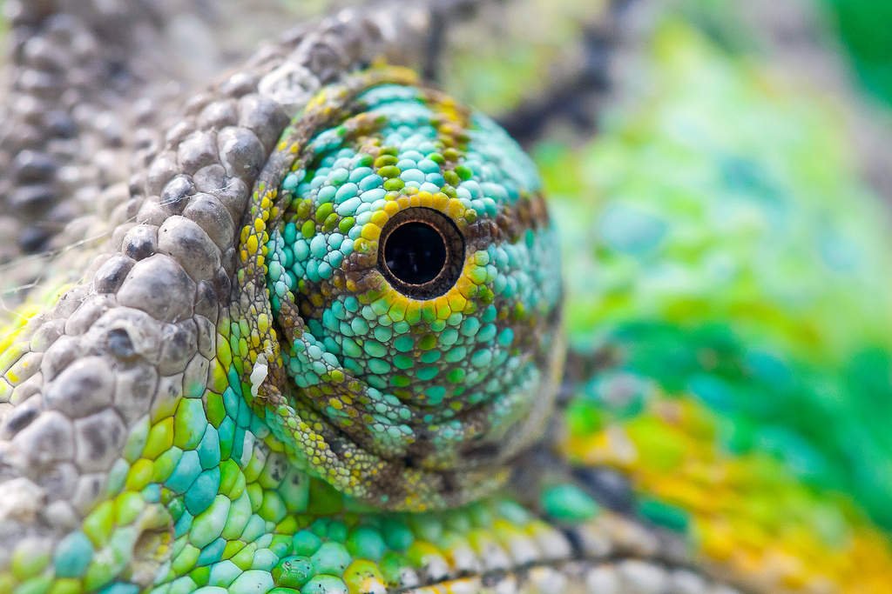

There are about 8,200 species of reptiles. They include turtles, lizards, snake, crocodiles and tuataras. Reptiles were the first vertebrate animals to be independent of water. An amniotic egg with a waterproof shell enabled reptiles to breed and hatch on land, without the need to return to water. Because reptiles rely on external heat to regulate their body hours in the sun warming themselves by infrared radiation.
Humans have long feared and respected reptiles. Snakes, crocodiles, and mythical dragons are found in the legends of peoples throughout the world, and these animals are often associated with magic. Many reptiles species have impressive abilities: they can scale walls, burrow, swim, climb slender stalks and even run across loose, hot sand dunes. Chameleons have stereoscopic eyes that allow them to see prey with three-dimensional depth perception. While snakes have no visible ears, they are able to hear through their jaw and internal ear bones. They can detect low-frequency vibrations in the soil to spot approaching predators or prey. Some snakes can swallow prey larger than themselves.
Although snakes have been hated and persecuted, in fact only one out of ten species of snakes is dangerous. Most snakes will never attack unless they feel threatened and use warning mechanism and behaviours before attacking. Learning which species may be dangerous is important to protect snakes and people living alongside these animals. Many reptiles species today are in danger of extinction, threatened by hunting and habitat destruction. These amazing animals with extraordinary traits have been around for many millions of years.